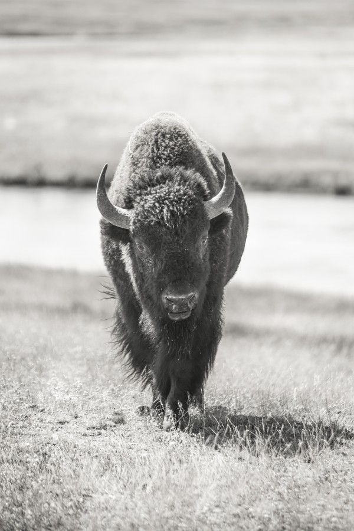
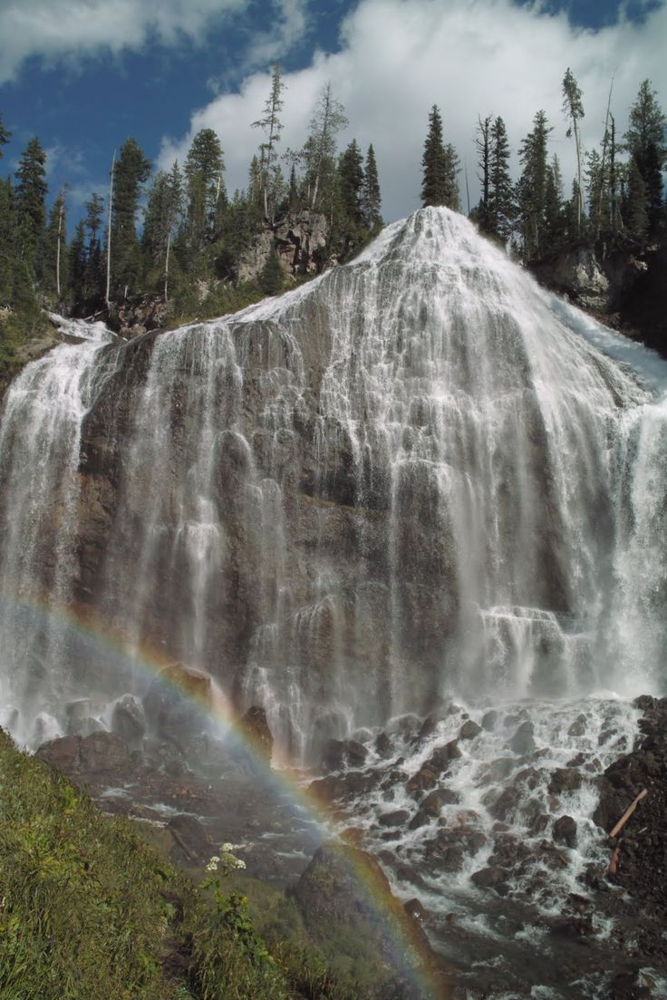
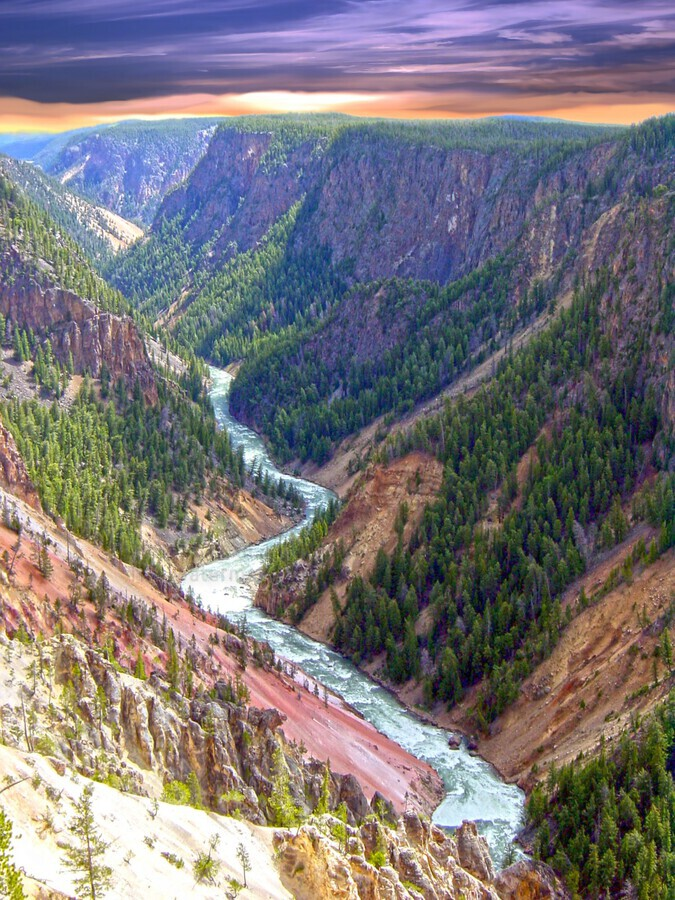
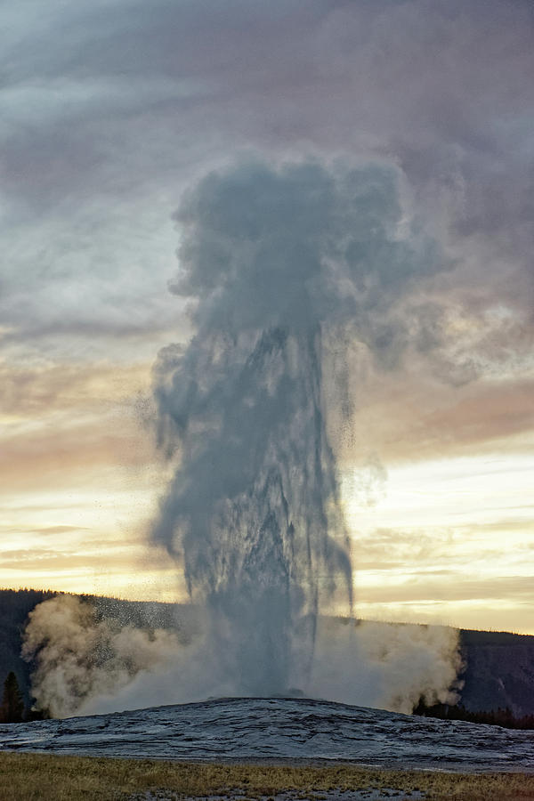

If you’re in the area, you must go to West Yellowstone. Take a beautiful drive to nearby Montana and visit the most famous national park in America! West Yellowstone features attractions such as the Old Faithful Geyser, Mammoth Hot Springs, and more bison than you can even imagine. Yellowstone is the perfect exploration destination for adventure seekers! Be sure to take lots of pictures to make all of your Facebook friends jealous!
More Information

Old Faithful
Old Faithful is a cone geyser in Yellowstone National Park in Wyoming, United States. It was named in 1870 during the Washburn–Langford–Doane Expedition and was the first geyser in the park to be named. It is a highly predictable geothermal feature and has erupted every 44 minutes to two hours since 2000.


Hour
Open daily (May through September) and open weekdays (October through April).
May 1st – May 20th: 8 a.m. to 6 p.m.
May 21st – Sept.4th: 8 a.m. to 8 p.m.
Sept 5th – Sept. 30th: 8 a.m. to 6 p.m.
Oct.1 – April 30th: 8 a.m. to 5 p.m.

Union Fall
Try this 15.4-mile out-and-back trail near Yellowstone National Park, Wyoming. Generally considered a challenging route, it takes an average of 6 h 25 min to complete. This is a very popular area for camping, hiking, and horseback riding, so you'll likely encounter other people while exploring. The best times to visit this trail are May through September. You'll need to leave pups at hoe — dogs aren't allowed on this trail..